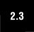

4.4. Internal Types
We will briefly introduce these internal types here. The general application programmer would typically not interact with these objects directly, but we include them here for completeness. Please refer to the source code or Python internal and online documentation for more information. In case you were wondering about exceptions, they are now implemented as classes. In older versions of Python, exceptions were implemented as strings. 4.4.1. Code ObjectsCode objects are executable pieces of Python source that are byte-compiled, usually as return values from calling the compile() BIF. Such objects are appropriate for execution by either exec or by the eval() BIF. All this will be discussed in greater detail in Chapter 14. Code objects themselves do not contain any information regarding their execution environment, but they are at the heart of every user-defined function, all of which do contain some execution context. (The actual byte-compiled code as a code object is one attribute belonging to a function.) Along with the code object, a function's attributes also consist of the administrative support that a function requires, including its name, documentation string, default arguments, and global namespace. 4.4.2. Frame ObjectsThese are objects representing execution stack frames in Python. Frame objects contain all the information the Python interpreter needs to know during a runtime execution environment. Some of its attributes include a link to the previous stack frame, the code object (see above) that is being executed, dictionaries for the local and global namespaces, and the current instruction. Each function call results in a new frame object, and for each frame object, a C stack frame is created as well. One place where you can access a frame object is in a traceback object (see the following section). 4.4.3. Traceback ObjectsWhen you make an error in Python, an exception is raised. If exceptions are not caught or "handled," the interpreter exits with some diagnostic information similar to the output shown below: Traceback (innermost last): File "<stdin>", line N?, in ??? ErrorName: error reason The traceback object is just a data item that holds the stack trace information for an exception and is created when an exception occurs. If a handler is provided for an exception, this handler is given access to the traceback object. 4.4.4. Slice ObjectsSlice objects are created using the Python extended slice syntax. This extended syntax allows for different types of indexing. These various types of indexing include stride indexing, multi-dimensional indexing, and indexing using the Ellipsis type. The syntax for multi-dimensional indexing is sequence[start1 : end1, start2 : end2], or using the ellipsis, sequence [..., start1 : end1]. Slice objects can also be generated by the slice() BIF. Stride indexing for sequence types allows for a third slice element that allows for "step"-like access with a syntax of sequence[starting_index : ending_index : stride].  Support for the stride element of the extended slice syntax have been in Python for a long time, but until 2.3 was only available via the C API or Jython (and previously JPython). Here is an example of stride indexing: >>> foostr = 'abcde' >>> foostr[::-1] 'edcba' >>> foostr[::-2] 'eca' >>> foolist = [123, 'xba', 342.23, 'abc'] >>> foolist[::-1] ['abc', 342.23, 'xba', 123] 4.4.5. Ellipsis ObjectsEllipsis objects are used in extended slice notations as demonstrated above. These objects are used to represent the actual ellipses in the slice syntax (...). Like the Null object None, ellipsis objects also have a single name, Ellipsis, and have a Boolean TRue value at all times. 4.4.6. XRange ObjectsXRange objects are created by the BIF xrange(), a sibling of the range() BIF, and used when memory is limited and when range() generates an unusually large data set. You can find out more about range() and xrange() in Chapter 8. For an interesting side adventure into Python types, we invite the reader to take a look at the types module in the standard Python library. |